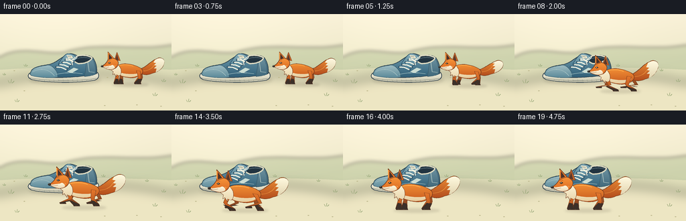
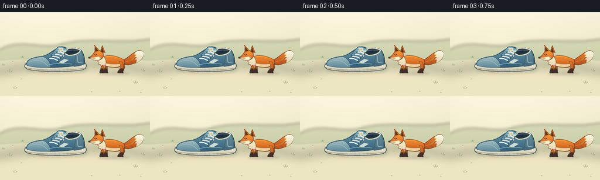

CODING AGENTS AS PIXEL WORLD MODELS
traex/GPT-6.1-Sol · dynamic_spatial_relationship_0030
点击播放 · 原生 RGB 像素
逐轮保存的候选
回放视频、检查图与代码变化。
每份候选均可单独播放。实际图片检查记录在下方工具轨迹中。
候选 01播放与检查图
点击播放 · 原生 RGB 像素


展开代码变化
--- 上一保存版本
+++ 本次保存版本
@@ -0,0 +1,189 @@
+"""Procedural, supersampled storybook animation from prompt.txt.
+No external images, models, or rendering engines are used.
+"""
+from pathlib import Path
+import json, math
+import numpy as np
+from PIL import Image, ImageDraw, ImageFilter
+import artifact_io
+
+ROOT = Path(__file__).resolve().parent
+SPEC = json.loads((ROOT/'task_spec.json').read_text())
+W,H = SPEC['width'],SPEC['height']
+SS = 4
+SIZE = (W*SS,H*SS)
+
+def bez(start, segments):
+ out = [start]
+ p = start
+ for c1,c2,q in segments:
+ for t in np.linspace(0,1,20)[1:]:
+ a=1-t
+ out.append((a*a*a*p[0]+3*a*a*t*c1[0]+3*a*t*t*c2[0]+t*t*t*q[0], a*a*a*p[1]+3*a*a*t*c1[1]+3*a*t*t*c2[1]+t*t*t*q[1]))
+ p=q
+ return out
+
+def coords(p): return [(round(x*SS),round(y*SS)) for x,y in p]
+def line(im,p,fill,width=1):
+ ImageDraw.Draw(im).line(coords(p),fill=fill,width=max(1,round(width*SS)),joint='curve')
+def polygon(im,p,fill,outline=None,width=.7):
+ d=ImageDraw.Draw(im); d.polygon(coords(p),fill=fill)
+ if outline: line(im,p+[p[0]],outline,width)
+def ellipse(im,box,fill,outline=None,width=.6):
+ ImageDraw.Draw(im).ellipse(tuple(round(v*SS) for v in box),fill=fill,outline=outline,width=max(1,round(width*SS)))
+
+def gradient_shape(im,p,top,bottom,outline=None,width=.6):
+ mask=Image.new('L',SIZE); ImageDraw.Draw(mask).polygon(coords(p),fill=255)
+ ymin=min(y for x,y in p); ymax=max(y for x,y in p)
+ t=np.clip((np.arange(SIZE[1])/SS-ymin)/max(.01,ymax-ymin),0,1)[:,None,None]
+ rgb=(np.array(top)[None,None,:]*(1-t)+np.array(bottom)[None,None,:]*t).astype('uint8')
+ rgb=np.broadcast_to(rgb,(SIZE[1],SIZE[0],3)).copy()
+ im.paste(Image.fromarray(rgb), (0,0),mask)
+ if outline: line(im,p+[p[0]],outline,width)
+
+def shadow(im,box,alpha=36,blur=2):
+ sh=Image.new('RGBA',SIZE,(0,0,0,0)); ellipse(sh,box,(64,52,39,alpha))
+ sh=sh.filter(ImageFilter.GaussianBlur(blur*SS)); im.alpha_composite(sh)
+
+# Static illustrated environment. Fixed camera gives unambiguous spatial motion.
+def background():
+ y,x=np.mgrid[0:H*SS,0:W*SS]/SS
+ k=np.clip(y/144,0,1)[...,None]
+ a=np.array([248,240,215]); b=np.array([224,222,184])
+ arr=a[None,None,:]*(1-k)+b[None,None,:]*k
+ glow=np.exp(-((x-82)**2/19000+(y-38)**2/9000))[...,None]*7
+ arr=np.clip(arr+glow,0,255).astype(np.uint8)
+ im=Image.fromarray(arr).convert('RGBA')
+ # A soft, unfussy meadow behind the subject.
+ distant=Image.new('RGBA',SIZE,(0,0,0,0))
+ polygon(distant,bez((0,64),[((29,46),(65,61),(96,57)),((145,40),(204,56),(256,46))])+[(256,83),(0,83)],(182,194,151,135))
+ polygon(distant,bez((0,73),[((55,62),(92,71),(138,66)),((193,56),(236,66),(256,60))])+[(256,88),(0,88)],(167,184,139,115))
+ im.alpha_composite(distant.filter(ImageFilter.GaussianBlur(2.7*SS)))
+ # Broad warm ground; little tufts only away from the action.
+ polygon(im,bez((0,83),[((78,78),(179,79),(256,83))])+[(256,144),(0,144)],(226,224,187,255))
+ ground=Image.new('RGBA',SIZE,(0,0,0,0))
+ ellipse(ground,(-45,90,303,170),(249,236,203,125))
+ im.alpha_composite(ground.filter(ImageFilter.GaussianBlur(9*SS)))
+ for gx,gy,s in [(16,103,1),(231,122,.8),(25,131,.75),(219,85,.55),(38,78,.6),(154,78,.6),(6,91,.5),(244,101,.7)]:
+ for dx,lean,l in [(-2,-2,4),(0,1,6),(2,3,3)]:
+ line(im,[(gx+dx*s,gy),(gx+(dx+lean)*s,gy-l*s)],(147,164,116,255),.65)
+ for px,py in [(35,114),(20,84),(203,135),(155,136),(239,137),(159,94)]:
+ ellipse(im,(px,py,px+2.4,py+1),(190,184,141,255))
+ return im
+
+NAVY=(44,62,74,255)
+def shoe(im):
+ shadow(im,(44,91,150,105),42,2.5)
+ # Rubber outsole and upper are separate, with high visibility of the laces.
+ sole=bez((46,87),[((63,85),(129,84),(144,86)),((149,90),(148,97),(140,99)),((112,104),(63,102),(48,98)),((41,96),(40,90),(46,87))])
+ gradient_shape(im,sole,(253,248,228),(197,194,170),NAVY,.9)
+ line(im,bez((44,95),[((74,101),(117,100),(144,96))]),(125,132,122,255),.65)
+ for x in range(52,141,7):
+ line(im,[(x,97.7),(x+.4,100.3)],(151,155,137,255),.45)
+ upper=bez((46,87),[((46,80),(59,77),(73,75)),((82,73),(87,68),(98,61)),((103,57),(110,59),(117,63)),((124,60),(134,60),(139,66)),((143,72),(145,80),(144,89)),((121,95),(74,97),(48,92)),((45,91),(44,89),(46,87))])
+ gradient_shape(im,upper,(111,156,173),(49,95,119),NAVY,1)
+ toe=bez((46,87),[((47,80),(58,78),(72,76)),((79,77),(86,84),(86,94)),((73,96),(55,94),(48,92)),((45,91),(44,89),(46,87))])
+ gradient_shape(im,toe,(160,190,195),(91,137,153),(57,95,112,255),.65)
+ line(im,bez((49,86),[((60,80),(72,81),(81,92))]),(194,215,209,255),.6)
+ heel=bez((129,64),[((134,62),(138,65),(139,69)),((142,75),(144,85),(142,90)),((137,92),(129,93),(126,93)),((128,83),(129,74),(129,64))])
+ gradient_shape(im,heel,(111,148,162),(66,106,124),(58,92,107,255),.65)
+ line(im,[(131,71),(133,86),(141,87)],(190,208,200,255),.65)
+ # Collar: an open shoe cavity bordered in soft cream padding.
+ opening=bez((110,66),[((114,60),(130,60),(137,65)),((136,70),(128,74),(117,74)),((111,72),(109,69),(110,66))])
+ polygon(im,opening,(34,52,64,255),(221,218,193,255),2)
+ line(im,bez((113,67),[((119,64),(129,64),(134,66))]),(93,115,124,255),1)
+ tongue=bez((87,74),[((91,68),(97,59),(101,59)),((106,58),(113,62),(115,66)),((108,72),(103,79),(98,83)),((94,80),(90,77),(87,74))])
+ gradient_shape(im,tongue,(136,174,185),(74,124,145),(44,83,106,255),.7)
+ polygon(im,[(99,61),(107,62),(109,66),(102,66)],(235,228,202,255))
+ line(im,[(101,63),(106,64)],(93,113,117,255),.7)
+ # Side panel and a subtle sewn emblem.
+ line(im,bez((84,90),[((95,87),(110,87),(123,89))]),(181,207,204,255),.65)
+ polygon(im,[(100,86),(110,80),(117,82),(107,88)],(204,221,211,255))
+ for j in range(4):
+ a=(84+j*4.6,79-j*3.5); b=(99+j*3.5,83-j*3.9)
+ ellipse(im,(a[0]-1.5,a[1]-1.5,a[0]+1.5,a[1]+1.5),(42,76,97,255))
+ ellipse(im,(b[0]-1.5,b[1]-1.5,b[0]+1.5,b[1]+1.5),(42,76,97,255))
+ line(im,[a,((a[0]+b[0])/2,(a[1]+b[1])/2-1.4),b],(251,247,228,255),1.8)
+ # Bow neatly tucked at the upper instep.
+ line(im,bez((107,69),[((95,62),(96,69),(107,69)),((116,59),(119,66),(107,69))]),(247,242,222,255),1.1)
+ line(im,[(107,69),(108,76)],(250,245,224,255),1.25)
+
+FOXLINE=(112,56,29,255)
+def fox(im,cx,floor,s,phase,moving,frame):
+ # Local model points refer to a left-facing fox; floor anchors the feet.
+ bounce=math.sin(phase*2)*1.4*moving
+ def tr(p): return [(cx+x*s,floor+(y-bounce)*s) for x,y in p]
+ def poly(p,fill,outline=FOXLINE,w=.65): polygon(im,tr(p),fill,outline,w*s)
+ def grad(p,a,b,outline=FOXLINE,w=.65): gradient_shape(im,tr(p),a,b,outline,w*s)
+ def stroke(p,color,w=.6): line(im,tr(p),color,w*s)
+ def ell(box,fill,outline=None,w=.6):
+ a=tr([(box[0],box[1]),(box[2],box[3])]); ellipse(im,(a[0][0],a[0][1],a[1][0],a[1][1]),fill,outline,w*s)
+ shadow(im,(cx-32*s,floor-3,cx+36*s,floor+3.4),35,1.7)
+ # The two far legs remain visible as darker silhouettes.
+ def leg(hip,off,back=False,far=False):
+ v=math.sin(phase+off)*moving
+ knee=(hip+v*7+(3 if back else -1),-13+abs(v)*2)
+ foot=(hip-v*11, -.7- max(0,v)*6*moving)
+ p=[(hip-3,-26),(hip+4,-25),(knee[0]+2.7,knee[1]),(foot[0]+2,foot[1]-3),(foot[0]+3,foot[1]),(foot[0]-6,foot[1]),(foot[0]-7,foot[1]-2),(knee[0]-2.5,knee[1]-1)]
+ grad(p,(186,92,39) if far else (229,119,44),(121,66,35) if far else (178,84,31),FOXLINE,.55)
+ sock=[(knee[0]-2.4,knee[1]+2),(knee[0]+2,knee[1]+3),(foot[0]+2,foot[1]-3),(foot[0]+3,foot[1]),(foot[0]-6,foot[1]),(foot[0]-7,foot[1]-2)]
+ poly(sock,(60,48,41,255),(77,48,32,255),.4)
+ stroke([(foot[0]-4,foot[1]-1),(foot[0]-2,foot[1]-1)],(121,109,89,255),.35)
+ leg(-14,math.pi,far=True);leg(19,0,True,True)
+ # Broad sweeping fox tail, cream-tipped, behind the torso.
+ wag=math.sin(phase*.5)*3*moving+math.sin(frame*.35)*.8
+ tail=bez((17,-29),[((29,-29),(38,-43+wag),(51,-48+wag)),((55,-51+wag),(61,-50+wag),(64,-46+wag)),((68,-37+wag),(58,-24),(43,-21)),((32,-16),(23,-18),(17,-24))])
+ grad(tail,(234,140,53),(179,77,29),FOXLINE,.8)
+ tip=bez((48,-46+wag),[((54,-50+wag),(61,-50+wag),(64,-46+wag)),((68,-39+wag),(59,-26),(49,-23))])+[(51,-30),(46,-30),(51,-35),(46,-36),(50,-40),(45,-41)]
+ grad(tip,(255,249,223),(226,213,177),None)
+ stroke(bez((23,-25),[((37,-25),(43,-31),(46,-36))]),(235,148,62,255),.8)
+ body=bez((-24,-34),[((-15,-42),(8,-39),(22,-30)),((28,-25),(24,-17),(16,-15)),((7,-10),(-10,-13),(-22,-19)),((-29,-23),(-28,-28),(-24,-34))])
+ grad(body,(242,143,53),(198,89,31),FOXLINE,.8)
+ # Soft cream abdomen, with small fur points.
+ belly=bez((-20,-23),[((-10,-20),(7,-17),(20,-22)),((18,-13),(-4,-11),(-18,-18))])+[(-22,-17),(-21,-21)]
+ grad(belly,(243,224,184),(228,204,158),None)
+ leg(16,math.pi,True,False);leg(-22,0,False,False)
+ neck=bez((-30,-40),[((-22,-40),(-19,-35),(-16,-29)),((-15,-24),(-15,-18),(-19,-16))])+[(-24,-18),(-24,-14),(-28,-20),(-31,-18),(-30,-24),(-34,-27)]
+ grad(neck,(255,248,220),(232,212,171),FOXLINE,.5)
+ # Alert triangular ears, long muzzle, white cheeks, dark eyes and nose.
+ poly([(-28,-45),(-23,-60),(-17,-44)],(201,101,39,255))
+ poly([(-26,-47),(-23,-56),(-20,-45)],(90,57,43,255),None)
+ head=bez((-40,-46),[((-36,-50),(-26,-50),(-22,-44)),((-18,-39),(-23,-31),(-29,-29)),((-36,-26),(-44,-29),(-52,-34)),((-47,-36),(-43,-40),(-40,-46))])
+ grad(head,(247,148,56),(216,103,34),FOXLINE,.8)
+ poly([(-40,-45),(-40,-61),(-29,-49)],(233,124,45,255),FOXLINE,.7)
+ poly([(-38,-47),(-38,-57),(-32,-49)],(75,51,42,255),None)
+ # A thin bright edge gives the near ear its triangular silhouette.
+ stroke([(-40,-59),(-40,-48)],(255,184,89,255),.65)
+ cheek=bez((-51,-34),[((-45,-33),(-40,-35),(-35,-35)),((-31,-38),(-28,-35),(-27,-31)),((-33,-26),(-42,-28),(-51,-34))])
+ grad(cheek,(254,246,220),(235,215,181),None)
+ stroke([(-49,-33),(-42,-32),(-38,-33)],(118,67,41,255),.5)
+ ell((-53,-35.6,-48.5,-32.1),(49,43,39,255),None)
+ ell((-52,-35,-50.6,-34.4),(160,151,132,255))
+ # Eye is an expressive dark almond, not an oversized cartoon circle.
+ poly([(-40,-40.5),(-37.3,-42),(-34.7,-40.1),(-37.7,-38.8)],(49,40,31,255),None)
+ ell((-38.2,-41.1,-37.2,-40.1),(255,247,222,255))
+ stroke([(-40.1,-43.6),(-37,-44.4),(-35,-43.7)],(180,81,30,255),.65)
+ stroke([(-28,-36),(-26,-35),(-28,-33)],(251,195,116,255),.55)
+ # Subtle shoulder/brow highlights and fur texture, kept readable at 256px.
+ stroke(bez((-20,-35),[((-11,-38),(0,-37),(7,-34))]),(255,177,81,255),1)
+ for x,y in [(-13,-29),(-5,-31),(7,-28),(17,-29)]:
+ stroke([(x,y),(x+2.4,y+1)],(226,120,43,255),.45)
+
+
+def main():
+ bg=background(); shoe(bg)
+ frames=[]
+ for i in range(SPEC['frames']):
+ # Establish 'right of', run diagonally into the front, then come to rest.
+ u=np.clip((i-3)/11,0,1)
+ e=u*u*(3-2*u)
+ cx=193-85*e; fy=105+23*e; scale=.80+.22*e
+ moving=0 if i<3 else (1 if i<14 else max(0,1-(i-14)/2))
+ phase=(i-3)*1.65
+ im=bg.copy()
+ fox(im,cx,fy,scale,phase,moving,i)
+ frames.append(np.asarray(im.convert('RGB').resize((W,H),Image.Resampling.LANCZOS),dtype=np.uint8))
+ artifact_io.save(np.stack(frames),ROOT)
+ print('Saved',len(frames),'RGB frames:',W,'x',H)
+
+if __name__=='__main__': main()
可观测工具轨迹
实际执行的命令与返回图片。
命令 1exit 0
/bin/bash -lc 'ls -la; cat prompt.txt; cat GENERATION_RULES.md; cat task_spec.json'
命令 2exit 0
/bin/bash -lc "cat artifact_io.py; python - <<'PY'
import PIL, numpy
print('PIL',PIL.__version__)
PY"命令 3exit 0
/bin/bash -lc "cat > generate.py <<'PY'
\"\"\"Procedural, supersampled storybook animation from prompt.txt.
No external images, models, or rendering engines are used.
\"\"\"
from pathlib import Path
import json, math
import numpy as np
from PIL import Image, ImageDraw, ImageFilter
import artifact_io
ROOT = Path(__file__).resolve().parent
SPEC = json.loads((ROOT/'task_spec.json').read_text())
W,H = SPEC['width'],SPEC['height']
SS = 4
SIZE = (W*SS,H*SS)
def bez(start, segments):
out = [start]
p = start
for c1,c2,q in segments:
for t in np.linspace(0,1,20)[1:]:
a=1-t
out.append((a*a*a*p[0]+3*a*a*t*c1[0]+3*a*t*t*c2[0]+t*t*t*q[0], a*a*a*p[1]+3*a*a*t*c1[1]+3*a*t*t*c2[1]+t*t*t*q[1]))
p=q
return out
def coords(p): return [(round(x*SS),round(y*SS)) for x,y in p]
def line(im,p,fill,width=1):
ImageDraw.Draw(im).line(coords(p),fill=fill,width=max(1,round(width*SS)),joint='curve')
def polygon(im,p,fill,outline=None,width=.7):
d=ImageDraw.Draw(im); d.polygon(coords(p),fill=fill)
if outline: line(im,p+[p[0]],outline,width)
def ellipse(im,box,fill,outline=None,width=.6):
ImageDraw.Draw(im).ellipse(tuple(round(v*SS) for v in box),fill=fill,outline=outline,width=max(1,round(width*SS)))
def gradient_shape(im,p,top,bottom,outline=None,width=.6):
mask=Image.new('L',SIZE); ImageDraw.Draw(mask).polygon(coords(p),fill=255)
ymin=min(y for x,y in p); ymax=max(y for x,y in p)
t=np.clip((np.arange(SIZE[1])/SS-ymin)/max(.01,ymax-ymin),0,1)[:,None,None]
rgb=(np.array(top)[None,None,:]*(1-t)+np.array(bottom)[None,None,:]*t).astype('uint8')
rgb=np.broadcast_to(rgb,(SIZE[1],SIZE[0],3)).copy()
im.paste(Image.fromarray(rgb), (0,0),mask)
if outline: line(im,p+[p[0]],outline,width)
def shadow(im,box,alpha=36,blur=2):
sh=Image.new('RGBA',SIZE,(0,0,0,0)); ellipse(sh,box,(64,52,39,alpha))
sh=sh.filter(ImageFilter.GaussianBlur(blur*SS)); im.alpha_composite(sh)
# Static illustrated environment. Fixed camera gives unambiguous spatial motion.
def background():
y,x=np.mgrid[0:H*SS,0:W*SS]/SS
k=np.clip(y/144,0,1)[...,None]
a=np.array([248,240,215]); b=np.array([224,222,184])
arr=a[None,None,:]*(1-k)+b[None,None,:]*k
glow=np.exp(-((x-82)**2/19000+(y-38)**2/9000))[...,None]*7
arr=np.clip(arr+glow,0,255).astype(np.uint8)
im=Image.fromarray(arr).convert('RGBA')
# A soft, unfussy meadow behind the subject.
distant=Image.new('RGBA',SIZE,(0,0,0,0))
polygon(distant,bez((0,64),[((29,46),(65,61),(96,57)),((145,40),(204,56),(256,46))])+[(256,83),(0,83)],(182,194,151,135))
polygon(distant,bez((0,73),[((55,62),(92,71),(138,66)),((193,56),(236,66),(256,60))])+[(256,88),(0,88)],(167,184,139,115))
im.alpha_composite(distant.filter(ImageFilter.GaussianBlur(2.7*SS)))
# Broad warm ground; little tufts only away from the action.
polygon(im,bez((0,83),[((78,78),(179,79),(256,83))])+[(256,144),(0,144)],(226,224,187,255))
ground=Image.new('RGBA',SIZE,(0,0,0,0))
ellipse(ground,(-45,90,303,170),(249,236,203,125))
im.alpha_composite(ground.filter(ImageFilter.GaussianBlur(9*SS)))
for gx,gy,s in [(16,103,1),(231,122,.8),(25,131,.75),(219,85,.55),(38,78,.6),(154,78,.6),(6,91,.5),(244,101,.7)]:
for dx,lean,l in [(-2,-2,4),(0,1,6),(2,3,3)]:
line(im,[(gx+dx*s,gy),(gx+(dx+lean)*s,gy-l*s)],(147,164,116,255),.65)
for px,py in [(35,114),(20,84),(203,135),(155,136),(239,137),(159,94)]:
ellipse(im,(px,py,px+2.4,py+1),(190,184,141,255))
return im
NAVY=(44,62,74,255)
def shoe(im):
shadow(im,(44,91,150,105),42,2.5)
# Rubber outsole and upper are separate, with high visibility of the laces.
sole=bez((46,87),[((63,85),(129,84),(144,86)),((149,90),(148,97),(140,99)),((112,104),(63,102),(48,98)),((41,96),(40,90),(46,87))])
gradient_shape(im,sole,(253,248,228),(197,194,170),NAVY,.9)
line(im,bez((44,95),[((74,101),(117,100),(144,96))]),(125,132,122,255),.65)
for x in range(52,141,7):
line(im,[(x,97.7),(x+.4,100.3)],(151,155,137,255),.45)
upper=bez((46,87),[((46,80),(59,77),(73,75)),((82,73),(87,68),(98,61)),((103,57),(110,59),(117,63)),((124,60),(134,60),(139,66)),((143,72),(145,80),(144,89)),((121,95),(74,97),(48,92)),((45,91),(44,89),(46,87))])
gradient_shape(im,upper,(111,156,173),(49,95,119),NAVY,1)
toe=bez((46,87),[((47,80),(58,78),(72,76)),((79,77),(86,84),(86,94)),((73,96),(55,94),(48,92)),((45,91),(44,89),(46,87))])
gradient_shape(im,toe,(160,190,195),(91,137,153),(57,95,112,255),.65)
line(im,bez((49,86),[((60,80),(72,81),(81,92))]),(194,215,209,255),.6)
heel=bez((129,64),[((134,62),(138,65),(139,69)),((142,75),(144,85),(142,90)),((137,92),(129,93),(126,93)),((128,83),(129,74),(129,64))])
gradient_shape(im,heel,(111,148,162),(66,106,124),(58,92,107,255),.65)
line(im,[(131,71),(133,86),(141,87)],(190,208,200,255),.65)
# Collar: an open shoe cavity bordered in soft cream padding.
opening=bez((110,66),[((114,60),(130,60),(137,65)),((136,70),(128,74),(117,74)),((111,72),(109,69),(110,66))])
polygon(im,opening,(34,52,64,255),(221,218,193,255),2)
line(im,bez((113,67),[((119,64),(129,64),(134,66))]),(93,115,124,255),1)
tongue=bez((87,74),[((91,68),(97,59),(101,59)),((106,58),(113,62),(115,66)),((108,72),(103,79),(98,83)),((94,80),(90,77),(87,74))])
gradient_shape(im,tongue,(136,174,185),(74,124,145),(44,83,106,255),.7)
polygon(im,[(99,61),(107,62),(109,66),(102,66)],(235,228,202,255))
line(im,[(101,63),(106,64)],(93,113,117,255),.7)
# Side panel and a subtle sewn emblem.
line(im,bez((84,90),[((95,87),(110,87),(123,89))]),(181,207,204,255),.65)
polygon(im,[(100,86),(110,80),(117,82),(107,88)],(204,221,211,255))
for j in range(4):
a=(84+j*4.6,79-j*3.5); b=(99+j*3.5,83-j*3.9)
ellipse(im,(a[0]-1.5,a[1]-1.5,a[0]+1.5,a[1]+1.5),(42,76,97,255))
ellipse(im,(b[0]-1.5,b[1]-1.5,b[0]+1.5,b[1]+1.5),(42,76,97,255))
line(im,[a,((a[0]+b[0])/2,(a[1]+b[1])/2-1.4),b],(251,247,228,255),1.8)
# Bow neatly tucked at the upper instep.
line(im,bez((107,69),[((95,62),(96,69),(107,69)),((116,59),(119,66),(107,69))]),(247,242,222,255),1.1)
line(im,[(107,69),(108,76)],(250,245,224,255),1.25)
FOXLINE=(112,56,29,255)
def fox(im,cx,floor,s,phase,moving,frame):
# Local model points refer to a left-facing fox; floor anchors the feet.
bounce=math.sin(phase*2)*1.4*moving
def tr(p): return [(cx+x*s,floor+(y-bounce)*s) for x,y in p]
def poly(p,fill,outline=FOXLINE,w=.65): polygon(im,tr(p),fill,outline,w*s)
def grad(p,a,b,outline=FOXLINE,w=.65): gradient_shape(im,tr(p),a,b,outline,w*s)
def stroke(p,color,w=.6): line(im,tr(p),color,w*s)
def ell(box,fill,outline=None,w=.6):
a=tr([(box[0],box[1]),(box[2],box[3])]); ellipse(im,(a[0][0],a[0][1],a[1][0],a[1][1]),fill,outline,w*s)
shadow(im,(cx-32*s,floor-3,cx+36*s,floor+3.4),35,1.7)
# The two far legs remain visible as darker silhouettes.
def leg(hip,off,back=False,far=False):
v=math.sin(phase+off)*moving
knee=(hip+v*7+(3 if back else -1),-13+abs(v)*2)
foot=(hip-v*11, -.7- max(0,v)*6*moving)
p=[(hip-3,-26),(hip+4,-25),(knee[0]+2.7,knee[1]),(foot[0]+2,foot[1]-3),(foot[0]+3,foot[1]),(foot[0]-6,foot[1]),(foot[0]-7,foot[1]-2),(knee[0]-2.5,knee[1]-1)]
grad(p,(186,92,39) if far else (229,119,44),(121,66,35) if far else (178,84,31),FOXLINE,.55)
sock=[(knee[0]-2.4,knee[1]+2),(knee[0]+2,knee[1]+3),(foot[0]+2,foot[1]-3),(foot[0]+3,foot[1]),(foot[0]-6,foot[1]),(foot[0]-7,foot[1]-2)]
poly(sock,(60,48,41,255),(77,48,32,255),.4)
stroke([(foot[0]-4,foot[1]-1),(foot[0]-2,foot[1]-1)],(121,109,89,255),.35)
leg(-14,math.pi,far=True);leg(19,0,True,True)
# Broad sweeping fox tail, cream-tipped, behind the torso.
wag=math.sin(phase*.5)*3*moving+math.sin(frame*.35)*.8
tail=bez((17,-29),[((29,-29),(38,-43+wag),(51,-48+wag)),((55,-51+wag),(61,-50+wag),(64,-46+wag)),((68,-37+wag),(58,-24),(43,-21)),((32,-16),(23,-18),(17,-24))])
grad(tail,(234,140,53),(179,77,29),FOXLINE,.8)
tip=bez((48,-46+wag),[((54,-50+wag),(61,-50+wag),(64,-46+wag)),((68,-39+wag),(59,-26),(49,-23))])+[(51,-30),(46,-30),(51,-35),(46,-36),(50,-40),(45,-41)]
grad(tip,(255,249,223),(226,213,177),None)
stroke(bez((23,-25),[((37,-25),(43,-31),(46,-36))]),(235,148,62,255),.8)
body=bez((-24,-34),[((-15,-42),(8,-39),(22,-30)),((28,-25),(24,-17),(16,-15)),((7,-10),(-10,-13),(-22,-19)),((-29,-23),(-28,-28),(-24,-34))])
grad(body,(242,143,53),(198,89,31),FOXLINE,.8)
# Soft cream abdomen, with small fur points.
belly=bez((-20,-23),[((-10,-20),(7,-17),(20,-22)),((18,-13),(-4,-11),(-18,-18))])+[(-22,-17),(-21,-21)]
grad(belly,(243,224,184),(228,204,158),None)
leg(16,math.pi,True,False);leg(-22,0,False,False)
neck=bez((-30,-40),[((-22,-40),(-19,-35),(-16,-29)),((-15,-24),(-15,-18),(-19,-16))])+[(-24,-18),(-24,-14),(-28,-20),(-31,-18),(-30,-24),(-34,-27)]
grad(neck,(255,248,220),(232,212,171),FOXLINE,.5)
# Alert triangular ears, long muzzle, white cheeks, dark eyes and nose.
poly([(-28,-45),(-23,-60),(-17,-44)],(201,101,39,255))
poly([(-26,-47),(-23,-56),(-20,-45)],(90,57,43,255),None)
head=bez((-40,-46),[((-36,-50),(-26,-50),(-22,-44)),((-18,-39),(-23,-31),(-29,-29)),((-36,-26),(-44,-29),(-52,-34)),((-47,-36),(-43,-40),(-40,-46))])
grad(head,(247,148,56),(216,103,34),FOXLINE,.8)
poly([(-40,-45),(-40,-61),(-29,-49)],(233,124,45,255),FOXLINE,.7)
poly([(-38,-47),(-38,-57),(-32,-49)],(75,51,42,255),None)
# A thin bright edge gives the near ear its triangular silhouette.
stroke([(-40,-59),(-40,-48)],(255,184,89,255),.65)
cheek=bez((-51,-34),[((-45,-33),(-40,-35),(-35,-35)),((-31,-38),(-28,-35),(-27,-31)),((-33,-26),(-42,-28),(-51,-34))])
grad(cheek,(254,246,220),(235,215,181),None)
stroke([(-49,-33),(-42,-32),(-38,-33)],(118,67,41,255),.5)
ell((-53,-35.6,-48.5,-32.1),(49,43,39,255),None)
ell((-52,-35,-50.6,-34.4),(160,151,132,255))
# Eye is an expressive dark almond, not an oversized cartoon circle.
poly([(-40,-40.5),(-37.3,-42),(-34.7,-40.1),(-37.7,-38.8)],(49,40,31,255),None)
ell((-38.2,-41.1,-37.2,-40.1),(255,247,222,255))
stroke([(-40.1,-43.6),(-37,-44.4),(-35,-43.7)],(180,81,30,255),.65)
stroke([(-28,-36),(-26,-35),(-28,-33)],(251,195,116,255),.55)
# Subtle shoulder/brow highlights and fur texture, kept readable at 256px.
stroke(bez((-20,-35),[((-11,-38),(0,-37),(7,-34))]),(255,177,81,255),1)
for x,y in [(-13,-29),(-5,-31),(7,-28),(17,-29)]:
stroke([(x,y),(x+2.4,y+1)],(226,120,43,255),.45)
def main():
bg=background(); shoe(bg)
frames=[]
for i in range(SPEC['frames']):
# Establish 'right of', run diagonally into the front, then come to rest.
u=np.clip((i-3)/11,0,1)
e=u*u*(3-2*u)
cx=193-85*e; fy=105+23*e; scale=.80+.22*e
moving=0 if i<3 else (1 if i<14 else max(0,1-(i-14)/2))
phase=(i-3)*1.65
im=bg.copy()
fox(im,cx,fy,scale,phase,moving,i)
frames.append(np.asarray(im.convert('RGB').resize((W,H),Image.Resampling.LANCZOS),dtype=np.uint8))
artifact_io.save(np.stack(frames),ROOT)
print('Saved',len(frames),'RGB frames:',W,'x',H)
if __name__=='__main__': main()
PY
python generate.py"命令 4exit 0
/bin/bash -lc "python - <<'PY'
from pathlib import Path
import numpy as np
from PIL import Image
p=Path('.')
a=np.load('pixels.npz')['pixels']
assert a.shape==(144,256,20)
assert len(list((p/'frames').glob('*.png')))==20
assert Image.open('frames/00.png').mode=='RGB'
assert (p/'index.html').exists()
print('Verified 20 RGB frames, packed pixel artifact, and HTML player.')
PY
command -v ffmpeg || true"保存候选 1 份；完成命令 4 次；可验证图片返回 0 张。原始 API 响应与完整日志保留在本地。